<meta charset="utf-8">
<title>Weight-Space Programming for Materials</title>
<meta name="claude:viewport-fit-sides" content="cover">
<link rel="stylesheet" href="https://fonts.googleapis.com/css2?family=Source+Serif+4:opsz,wght@8..60,400;8..60,600&family=IBM+Plex+Sans:wght@400;500;600&family=IBM+Plex+Mono:wght@400;500&display=swap">
<style>
/* Layout: one reading column, 44rem; tables and charts may run to 56rem. A lab notebook, not a magazine. */
:root{
  --bg:#fbfbf9; --fg:#1c2226; --muted:#5d686f; --rule:#d9dedc; --panel:#f1f4f2;
  --good:#1f6f5c; --bad:#a23b2c; --flat:#7a858b; --accent:#235a8c; --bar:#235a8c; --bar2:#9fb6c9;
  --serif:"Source Serif 4",Georgia,serif; --sans:"IBM Plex Sans",system-ui,sans-serif; --mono:"IBM Plex Mono",ui-monospace,monospace;
}
@media (prefers-color-scheme: dark){ :root:not([data-theme="light"]){
  --bg:#14181a; --fg:#e4e8e6; --muted:#9aa5aa; --rule:#2f383c; --panel:#1c2225;
  --good:#5cc0a6; --bad:#e38a7b; --flat:#8d989d; --accent:#7fb3e0; --bar:#7fb3e0; --bar2:#3f566a; color-scheme:dark } }
:root[data-theme="dark"]{
  --bg:#14181a; --fg:#e4e8e6; --muted:#9aa5aa; --rule:#2f383c; --panel:#1c2225;
  --good:#5cc0a6; --bad:#e38a7b; --flat:#8d989d; --accent:#7fb3e0; --bar:#7fb3e0; --bar2:#3f566a; color-scheme:dark }
body{background:var(--bg);color:var(--fg);font-family:var(--serif);font-size:18px;line-height:1.6;
  padding-left:max(16px,env(safe-area-inset-left,0px));padding-right:max(16px,env(safe-area-inset-right,0px));padding-block:3rem 5rem}
main{max-width:44rem;margin-inline:auto;display:flex;flex-direction:column;gap:1.15rem}
.wide{width:min(56rem,100%);align-self:center}
h1{font-size:2.3rem;line-height:1.15;font-weight:600;text-wrap:balance;margin:0}
h2{font-family:var(--sans);font-size:1.45rem;font-weight:600;margin:2.2rem 0 0;padding-top:1.4rem;border-top:1px solid var(--rule);text-wrap:balance}
h3{font-size:1.3rem;font-weight:600;line-height:1.3;margin:.2rem 0 0;text-wrap:balance}
p,ul,ol{margin:0} ul,ol{padding-left:1.3rem;display:flex;flex-direction:column;gap:.35rem}
a{color:var(--accent)}
.meta,.label,figcaption,th,.note,.setup,.teaser,.chart{font-family:var(--sans)}
.meta{color:var(--muted);font-size:.95rem}
.label{font-size:.78rem;letter-spacing:.09em;text-transform:uppercase;color:var(--muted);font-weight:600;margin-top:1.6rem}
.tldr{background:var(--panel);padding:1.1rem 1.25rem;border-radius:6px;display:flex;flex-direction:column;gap:.6rem}
.teaser{display:grid;grid-template-columns:repeat(auto-fit,minmax(14rem,1fr));gap:1rem}
.teaser div{border:1px solid var(--rule);border-radius:6px;padding:1rem;display:flex;flex-direction:column;gap:.45rem;font-size:.95rem;min-width:0}
.teaser b{font-size:.78rem;letter-spacing:.09em;text-transform:uppercase}
.big{font-size:1.9rem;font-weight:600;font-variant-numeric:tabular-nums;line-height:1.1}
.works{color:var(--good)} .fails{color:var(--bad)} .mixed{color:var(--flat)}
.setup{font-size:.95rem;background:var(--panel);border-radius:6px;padding:.9rem 1.1rem}
.setup ul{gap:.25rem}
.scroll{overflow-x:auto}
table{border-collapse:collapse;width:100%;font-family:var(--sans);font-size:.9rem;font-variant-numeric:tabular-nums}
th,td{padding:.45rem .6rem;border-bottom:1px solid var(--rule);text-align:right;white-space:nowrap}
th:first-child,td:first-child{text-align:left;white-space:normal}
th{font-weight:600;color:var(--muted);font-size:.8rem}
td.w{color:var(--good);font-weight:600} td.l{color:var(--bad);font-weight:600}
figure{margin:0;display:flex;flex-direction:column;gap:.6rem}
figcaption,.note{font-size:.86rem;color:var(--muted)}
.chart{display:grid;grid-template-columns:minmax(9rem,15rem) 1fr 4.5rem;gap:.4rem .7rem;align-items:center;font-size:.88rem}
.chart .track{background:var(--panel);height:1.05rem;border-radius:2px;min-width:0}
.chart .fill{background:var(--bar);height:100%;border-radius:2px}
.chart .fill.ref{background:var(--bar2)}
.chart .v{font-variant-numeric:tabular-nums;text-align:right}
code,pre{font-family:var(--mono);font-size:.84rem}
pre{background:var(--panel);padding:.9rem 1rem;border-radius:6px;overflow-x:auto;margin:0}
button{font-family:var(--sans);font-size:.85rem;padding:.35rem .8rem;border:1px solid var(--rule);background:var(--bg);color:var(--fg);border-radius:4px;cursor:pointer;align-self:flex-start}
button:focus-visible,a:focus-visible{outline:2px solid var(--accent);outline-offset:2px}
figure.plot img{width:100%;height:auto;display:block;background:#fff;border-radius:6px;padding:.6rem;box-sizing:border-box;border:1px solid var(--rule)}
figure.narrow{width:min(32rem,100%);align-self:center}
table.reg{font-size:.78rem}
table.reg td:first-child,table.reg th:first-child{min-width:10rem}
table.reg th,table.reg td{padding:.35rem .28rem}
</style>

<main>
<p class="label" style="margin-top:0">Private draft · not for distribution until the paper is out</p>
<h1>Weight-space programming for materials science</h1>
<p class="meta" style="font-size:1.1rem;color:var(--fg)">A language model writes property-prediction networks from knowledge alone</p>
<p class="meta">Sk Md Ahnaf Akif Alvi and Raymundo Arróyave · Texas A&amp;M University · Draft of 12 November 2026</p>

<div class="tldr">
<p><b>TL;DR.</b> We give a language model a task in words, the names of the inputs and a 16-unit network with every weight set to zero, and it writes all the weights. No data, no training run, no code execution. This page shows what such a written network is good for in materials discovery.</p>
<p><b>It is a usable predictor before any label.</b> Networks written by Opus 5.5 rank measured alloys at ρ = 0.64 to 0.79 and the bulk modulus of crystals at 0.93.</p>
<p><b>It is most useful as the prior mean of a Gaussian process when labels are few.</b> At five labels ranking rises from 0.35 to 0.69 on alloys (Opus, slope and offset integrated out) and from 0.15 to 0.95 on crystals, and Bayesian optimisation gets better on 4 of 5 measured tasks and 16 of 33 computed ones.</p>
<p><b>It holds up against computed thermodynamics.</b> On 35 Thermo-Calc targets a network written with no data comes close to an extrapolation from calculated binary and ternary values, and beats it on phase fractions.</p>
<p><b>The gain is in the first tens of labels.</b> With hundreds of labels the plain surrogate catches up, and where a simple rule exists the network only matches it.</p>
</div>

<div class="teaser wide">
<div><b class="works">Measured alloys</b><span>"Write the weights of a network that estimates Vickers hardness from element fractions. No data."</span><span class="big works">ρ = 0.79</span><span>ranking of 530 measured alloys by networks Opus 5.5 wrote. A rule of mixtures gets −0.24.</span></div>
<div><b class="works">Computed phase equilibria</b><span>35 Thermo-Calc targets in nine alloy systems, Bayesian optimisation from five labels.</span><span class="big works">16 of 33</span><span>targets with significantly lower regret than the plain GP, none higher (Opus 5.5).</span></div>
<div><b class="works">Structure-embedding surrogate</b><span>A Gaussian process on a learned embedding, five labels, with the written network as its mean.</span><span class="big works">0.15 → 0.95</span><span>ranking of the crystals a generator proposed, by bulk modulus.</span></div>
</div>

<p>Writing weights directly is one of the three verbs of weight-space programming, introduced by <a href="https://rikiyat.github.io/blog/weight-space-programming/">Takehi, Teoh, Zhang and Khattab</a>. Their networks and those of the follow-up work are classifiers, policies and language models. Materials discovery needs regressors that rank candidates from a handful of labels and report error bars, so we asked what a written network is worth there.</p>
<p>Each run below is one fresh model session that reads one prompt and writes one reply. No code execution, no calculator. Models: Claude Opus 5.5, Fable 5.2, Sonnet 5.5 and Haiku 5.5. The network-alone results are paired with the cheapest rule that uses the same information. A second attempt was made only where a session was cut off before it wrote a reply.</p>

<figure class="wide plot">
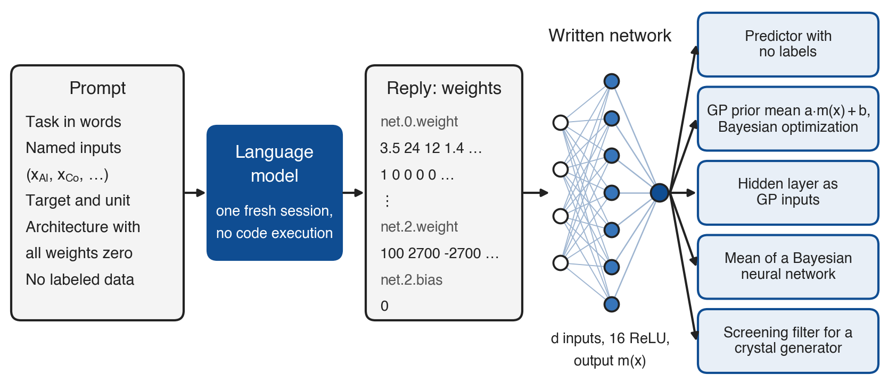
<figcaption>The method. A language model receives the task in words, the named inputs and an all-zero network, and writes every weight. The written network m(x) is then used as it is.</figcaption>
</figure>
<h2>How good is a written network as a regression model, with no labels?</h2>
<p>Before any use downstream, each network is scored as a predictor on every candidate of its task: by rank (Spearman ρ) and by R², as written and after the best straight-line rescaling of its output.</p>
<div class="scroll wide"><table class="reg">
<tr><th>Task</th><th>Rule<br>ρ</th><th><br>R²</th><th>R²<br>resc.</th><th>Opus 5.5<br>ρ</th><th><br>R²</th><th>R²<br>resc.</th><th>Fable 5.2<br>ρ</th><th><br>R²</th><th>R²<br>resc.</th></tr>
<tr><td>Ti alloy Young's modulus</td><td>0.24</td><td>−2.64</td><td>0.03</td><td>0.64</td><td>0.19</td><td>0.34</td><td>0.51</td><td>0.02</td><td>0.25</td></tr>
<tr><td>Ti alloy yield strength</td><td>−0.52</td><td>−0.79</td><td>0.23</td><td>0.69</td><td>0.42</td><td>0.46</td><td>0.64</td><td>0.34</td><td>0.37</td></tr>
<tr><td>Ti alloy hardness</td><td>−0.72</td><td>&lt; −10</td><td>0.44</td><td>0.65</td><td>0.40</td><td>0.43</td><td>0.61</td><td>0.29</td><td>0.39</td></tr>
<tr><td>Multi-principal-element alloy hardness</td><td>−0.24</td><td>&lt; −10</td><td>0.01</td><td>0.79</td><td>0.45</td><td>0.55</td><td>0.76</td><td>0.47</td><td>0.55</td></tr>
<tr><td>Multi-principal-element alloy yield strength</td><td>0.27</td><td>0.06</td><td>0.10</td><td>0.69</td><td>0.33</td><td>0.44</td><td>0.63</td><td>0.21</td><td>0.35</td></tr>
<tr><td>Crystal bulk modulus</td><td>0.74</td><td>−3.18</td><td>0.40</td><td>0.93</td><td>0.64</td><td>0.73</td><td>0.93</td><td>0.61</td><td>0.74</td></tr>
<tr><td>Crystal heat capacity</td><td>1.00</td><td>0.94</td><td>0.98</td><td>1.00</td><td>0.97</td><td>0.98</td><td>1.00</td><td>0.96</td><td>0.98</td></tr>
<tr><td>Thermo-Calc solidus (9 targets)</td><td>0.84</td><td>0.45</td><td>0.80</td><td>0.73</td><td>−0.12</td><td>0.60</td><td>0.70</td><td>0.03</td><td>0.60</td></tr>
<tr><td>&nbsp;&nbsp;&nbsp;with facts in the prompt</td><td></td><td></td><td></td><td>0.82</td><td>0.70</td><td>0.83</td><td>0.82</td><td>0.58</td><td>0.82</td></tr>
<tr><td>Thermo-Calc freezing range (9)</td><td>0.76</td><td>0.29</td><td>0.65</td><td>0.60</td><td>−0.55</td><td>0.42</td><td>0.57</td><td>−0.26</td><td>0.37</td></tr>
<tr><td>&nbsp;&nbsp;&nbsp;with facts in the prompt</td><td></td><td></td><td></td><td>0.74</td><td>0.50</td><td>0.68</td><td>0.70</td><td>0.18</td><td>0.63</td></tr>
<tr><td>Thermo-Calc phase fractions (16)</td><td>0.63</td><td>0.20</td><td>0.41</td><td>0.69</td><td>0.42</td><td>0.60</td><td>0.67</td><td>0.46</td><td>0.59</td></tr>
<tr><td>&nbsp;&nbsp;&nbsp;with facts in the prompt</td><td></td><td></td><td></td><td>0.71</td><td>0.43</td><td>0.58</td><td>0.68</td><td>0.36</td><td>0.56</td></tr>
<tr><td>Thermo-Calc, all 35 targets</td><td>0.70</td><td>0.29</td><td>0.60</td><td>0.67</td><td>0.32</td><td>0.57</td><td>0.64</td><td>0.16</td><td>0.49</td></tr>
<tr><td>&nbsp;&nbsp;&nbsp;with facts in the prompt</td><td></td><td></td><td></td><td>0.73</td><td>0.46</td><td>0.65</td><td>0.71</td><td>0.35</td><td>0.59</td></tr>
</table></div>
<p class="note">Measured alloys and crystals: mean over a model's replies. Thermo-Calc: mean ρ and median R² over targets. The rule is a rule of mixtures for alloys, 1 / volume per atom and Dulong–Petit for crystals, and the extrapolation from binary and ternary values for Thermo-Calc. R² resc.: after the best straight-line rescaling; it is the squared linear correlation. The 35th Thermo-Calc target, the α transus of titanium alloys, is counted only in the last rows. Crystal rows use every crystal of the task; later sections score generated crystals only, so their values differ, an upper bound on what a slope and offset can recover.</p>
<figure class="wide plot">
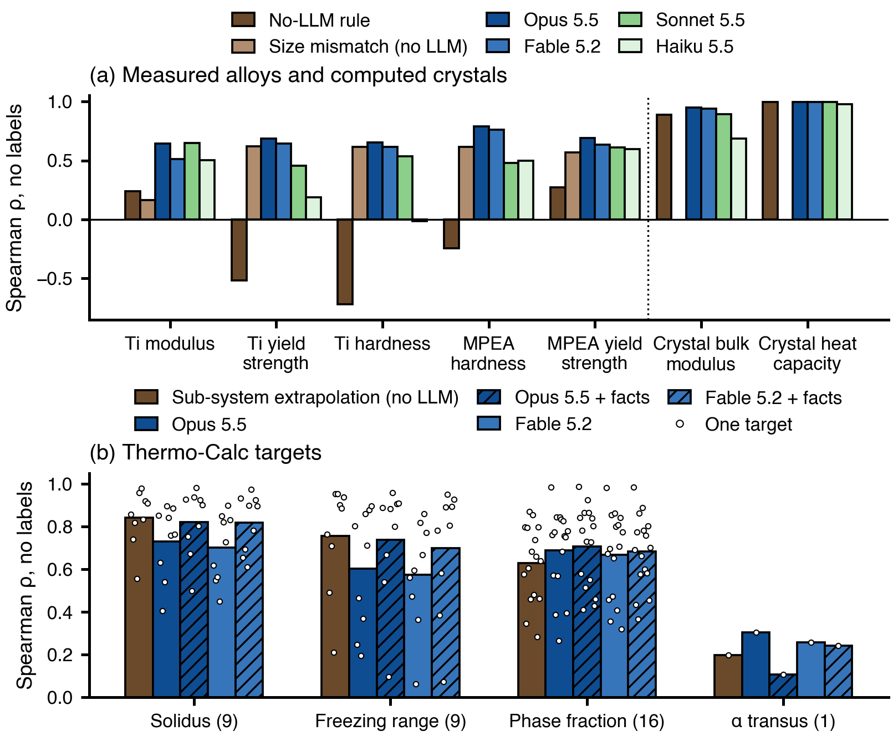
<figcaption>Rank correlation between a written network and the target with no labels. (a) Measured alloys and crystals, mean over a model's replies. (b) The 35 Thermo-Calc targets by kind; bars are means over targets, dots are single targets.</figcaption>
</figure>
<p>A written network gets the order right more often than the values. On measured alloys R² is 0.19 to 0.45 as written, where the rule of mixtures is below zero on four of the five tasks. On Thermo-Calc solidus and freezing range the networks know the trend but not the absolute level (R² below zero as written, 0.60 and 0.42 after rescaling); with the sub-system facts in the prompt R² as written rises to 0.70 and 0.50 (Opus). A GP trained on a few hundred labels does better, so the written network is a zero-label predictor of trends, and its best use is as the mean of a surrogate that corrects scale and shape with the first labels.</p>

<h2>Measured alloys: can a written network rank them and speed up the search?</h2>

<p class="label">Experiment 1</p>
<h3>Can a model write a network that ranks alloys with no training data?</h3>
<div class="setup"><ul>
<li><b>Network:</b> element fractions → 16 ReLU units → 1 output, 273 to 417 weights, all zero in the prompt.</li>
<li><b>Tasks:</b> yield strength and hardness of multi-principal-element alloys; Young's modulus, yield strength and hardness of titanium alloys. Measured data, 152 to 722 alloys each.</li>
<li><b>The model gets:</b> the input names, the target and its unit, the name of the published dataset and the number of alloys. No labelled example.</li>
<li><b>Runs:</b> 4 models × 5 tasks × 3 replies. 3 of 60 replies were malformed.</li>
<li><b>Reference:</b> a rule of mixtures from tabulated elemental properties, no language model.</li>
</ul></div>
<p>The stronger models write networks that rank real alloys well. The handbook rule does not; on three tasks it is anti-correlated.</p>
<figure class="wide">
<div class="chart">
<span>Alloy hardness · Opus 5.5</span><div class="track"><div class="fill" style="width:79%"></div></div><span class="v">0.79</span>
<span>Alloy hardness · Fable 5.2</span><div class="track"><div class="fill" style="width:76%"></div></div><span class="v">0.76</span>
<span>Alloy hardness · Sonnet 5.5</span><div class="track"><div class="fill" style="width:46%"></div></div><span class="v">0.46</span>
<span>Alloy hardness · Haiku 5.5</span><div class="track"><div class="fill" style="width:48%"></div></div><span class="v">0.48</span>
<span>Alloy hardness · handbook rule</span><div class="track"><div class="fill ref" style="width:0%"></div></div><span class="v">−0.25</span>
<span>Ti yield strength · Opus 5.5</span><div class="track"><div class="fill" style="width:69%"></div></div><span class="v">0.69</span>
<span>Ti yield strength · Fable 5.2</span><div class="track"><div class="fill" style="width:65%"></div></div><span class="v">0.65</span>
<span>Ti yield strength · Sonnet 5.5</span><div class="track"><div class="fill" style="width:47%"></div></div><span class="v">0.47</span>
<span>Ti yield strength · Haiku 5.5</span><div class="track"><div class="fill" style="width:20%"></div></div><span class="v">0.20</span>
<span>Ti yield strength · handbook rule</span><div class="track"><div class="fill ref" style="width:0%"></div></div><span class="v">−0.52</span>
</div>
<figcaption>Spearman ρ between the written network's output and the measured value, mean of three replies. Bars run from 0 to 1; negative values are printed, not drawn. These values are on each task's held-out half, so they differ by up to 0.03 from the table above, which uses every candidate.</figcaption>
</figure>
<p><b>How does it do it?</b> The replies are textbook metallurgy typed as weights. For titanium modulus, all three Fable replies build a beta-stabiliser score from the element fractions and pass it through a V-shaped curve: about 108 GPa for pure titanium, a minimum near 60 GPa where the beta phase is just retained, rising again beyond. Most hidden units are left at zero.</p>

<p class="label">Experiment 2</p>
<h3>Does a written prior make Bayesian optimisation find good alloys sooner?</h3>
<div class="setup"><ul>
<li><b>Loop:</b> pool-based BO, 5 random starting labels, 25 steps, expected improvement, 20 seeds.</li>
<li><b>Prior:</b> the written network m(x) enters the GP as the mean a·m(x)+b.</li>
<li><b>Choosing among replies:</b> at each step use the reply most correlated with the labels so far; below 0.3, use none. The rule was committed before the 20-seed runs.</li>
<li><b>Scoring:</b> area under the regret curve; paired Wilcoxon against the plain GP, Holm-corrected.</li>
</ul></div>
<div class="scroll wide"><table>
<tr><th>Task</th><th>Plain GP</th><th>Opus 5.5</th><th>Fable 5.2</th><th>Sonnet 5.5</th><th>Haiku 5.5</th></tr>
<tr><td>Ti alloy Young's modulus, GPa</td><td>7.68</td><td class="w">5.55</td><td>6.92</td><td>7.34</td><td>7.61</td></tr>
<tr><td>Ti alloy yield strength, MPa</td><td>314</td><td class="w">153</td><td class="w">148</td><td class="w">216</td><td>255</td></tr>
<tr><td>Ti alloy hardness, HV</td><td>40.1</td><td class="w">5.95</td><td class="w">10.0</td><td class="w">11.3</td><td>27.2</td></tr>
<tr><td>Alloy hardness, HV</td><td>226</td><td class="w">137</td><td class="w">120</td><td>247</td><td>259</td></tr>
<tr><td>Alloy yield strength, MPa</td><td>772</td><td class="l">900</td><td class="l">966</td><td>735</td><td>641</td></tr>
</table></div>
<p class="note">Area under the regret curve, mean of 20 seeds, lower is better. Green: better than the plain GP at p &lt; 0.05, Holm-corrected within a task over six arms. Red: worse in 14 of 20 seeds (p = 0.03 and 0.02 before correction, not significant after).</p>
<figure class="wide plot">
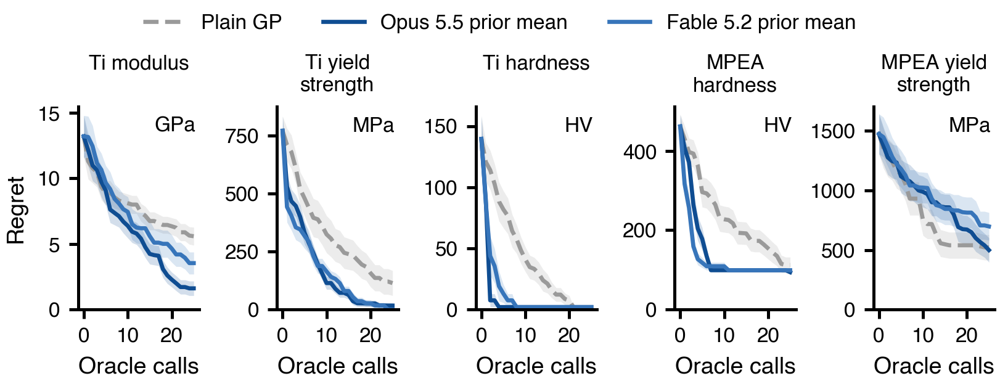
<figcaption>Bayesian optimisation on the measured alloy tasks. Regret is the gap between the best alloy in the pool and the best found; means over 20 seeds, bands are standard errors.</figcaption>
</figure>
<p>Opus priors help on four of five tasks. On titanium modulus the final regret falls from 5.6 to 1.6 GPa. <b>One task goes the wrong way:</b> on alloy yield strength the same networks that improved static ranking made the search worse. A partial diagnosis: these networks carry no ranking inside the best tenth of that pool (ρ 0.02 and 0.00) and underpredict it by 1.3 to 1.5 standard deviations, and the best tenth is all an optimiser cares about.</p>


<h2>Computed phase equilibria: how does it compare with thermodynamic data?</h2>

<p class="label">Experiment 3</p>
<h3>Can a model write a network for a solidus or a phase fraction it has never seen tabulated?</h3>
<div class="setup"><ul>
<li><b>Data:</b> nine alloy systems computed with Thermo-Calc for this study, 200 to 400 compositions each: five high-entropy families, nickel superalloys, titanium alloys, steels and aluminium alloys.</li>
<li><b>Targets:</b> 35 in all. Solidus, freezing range, and mole fractions of named phases at a fixed temperature, for example the γ′ fraction of a nickel alloy at 1173 K.</li>
<li><b>The model gets:</b> the element names and the definition of the target. No data.</li>
<li><b>With facts:</b> a second prompt adds the values for the binary and ternary sub-systems. The multicomponent target never appears.</li>
<li><b>Reference:</b> an extrapolation from the same binary and ternary values, with no language model. This is how a multicomponent value is normally estimated.</li>
<li><b>Runs:</b> Opus 5.5 and Fable 5.2, with and without facts, two replies per target: 280 replies, none malformed.</li>
</ul></div>
<figure class="wide">
<div class="chart">
<span>Solidus · extrapolation, no LLM</span><div class="track"><div class="fill ref" style="width:84%"></div></div><span class="v">0.84</span>
<span>Solidus · Opus 5.5</span><div class="track"><div class="fill" style="width:73%"></div></div><span class="v">0.73</span>
<span>Solidus · Opus 5.5 + facts</span><div class="track"><div class="fill" style="width:82%"></div></div><span class="v">0.82</span>
<span>Freezing range · extrapolation, no LLM</span><div class="track"><div class="fill ref" style="width:76%"></div></div><span class="v">0.76</span>
<span>Freezing range · Opus 5.5</span><div class="track"><div class="fill" style="width:60%"></div></div><span class="v">0.60</span>
<span>Freezing range · Opus 5.5 + facts</span><div class="track"><div class="fill" style="width:74%"></div></div><span class="v">0.74</span>
<span>Phase fractions · extrapolation, no LLM</span><div class="track"><div class="fill ref" style="width:63%"></div></div><span class="v">0.63</span>
<span>Phase fractions · Opus 5.5</span><div class="track"><div class="fill" style="width:69%"></div></div><span class="v">0.69</span>
<span>Phase fractions · Opus 5.5 + facts</span><div class="track"><div class="fill" style="width:71%"></div></div><span class="v">0.71</span>
</div>
<figcaption>Spearman ρ between a predictor and the Thermo-Calc value, with no labels, mean over targets of each kind (9 solidus, 9 freezing range, 16 phase fractions).</figcaption>
</figure>
<figure class="wide plot">
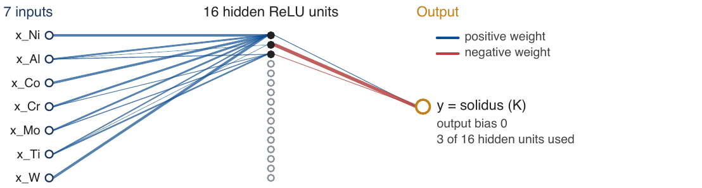
<figcaption>A written network drawn from its weights: solidus of Ni superalloys, Opus 5.5, no data. It uses 3 of its 16 hidden units: a linear solidus per element and two hinges for further drops at high Al + Ti.</figcaption>
</figure>
<figure class="wide plot">
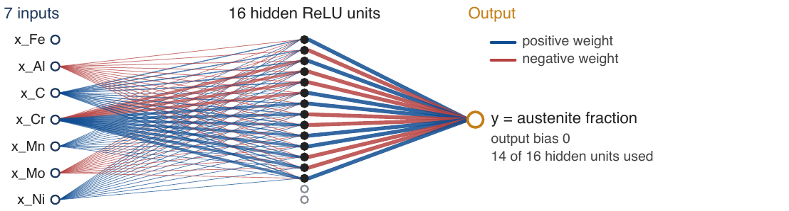
<figcaption>Another: austenite fraction of steels at 1173 K, Opus 5.5, no data. It uses 14 hidden units to build a clipped ramp from an austenite potential.</figcaption>
</figure>
<p>Over all 35 targets the extrapolation ranks at 0.70, Opus at 0.67 and Fable at 0.64. The extrapolation is ahead where the target varies smoothly with composition. <b>The written networks are ahead on phase fractions on average</b> (Opus on 7 of the 16 targets, Fable on 9), which depend on whether a phase appears at all: a polynomial through sub-system points cannot place a phase boundary inside the multicomponent space. Given the sub-system values, Opus is within 0.02 of the extrapolation on solidus and freezing range and ahead on phase fractions (0.73 against 0.70 overall). Two targets defeat every predictor: the freezing range of the Co–Cr–Cu–Fe–Ni–Ti family (ρ at most 0.21) and the α transus of titanium alloys (ρ at most 0.30).</p>

<p class="label">Experiment 4</p>
<h3>Does it help a Gaussian process and Bayesian optimisation on these targets?</h3>
<div class="scroll wide"><table>
<tr><th>Prior mean</th><th>ρ at 5 labels</th><th>ρ at 20 labels</th><th>BO: targets better / worse, of 33</th><th>Median regret area relative to the plain GP</th></tr>
<tr><td>None (plain GP)</td><td>0.37</td><td>0.69</td><td></td><td>1</td></tr>
<tr><td>Extrapolation from sub-systems, no LLM</td><td>0.68</td><td>0.75</td><td class="w">18 / 0</td><td>0.17</td></tr>
<tr><td>Opus 5.5</td><td>0.64</td><td>0.74</td><td class="w">16 / 0</td><td>0.43</td></tr>
<tr><td>Opus 5.5 + facts</td><td>0.69</td><td>0.75</td><td class="w">18 / 0</td><td>0.24</td></tr>
<tr><td>Fable 5.2</td><td>0.62</td><td>0.73</td><td class="w">15 / 1</td><td>0.35</td></tr>
<tr><td>Fable 5.2 + facts</td><td>0.68</td><td>0.74</td><td class="w">16 / 0</td><td>0.35</td></tr>
</table></div>
<p class="note">Ranking of held-out compositions, mean over 35 targets, slope and offset integrated out. BO: two-stage fit, 5 starting labels, 25 steps, 20 seeds, Holm-corrected p &lt; 0.05; two targets on which the plain GP has zero regret are left out.</p>
<figure class="wide plot">
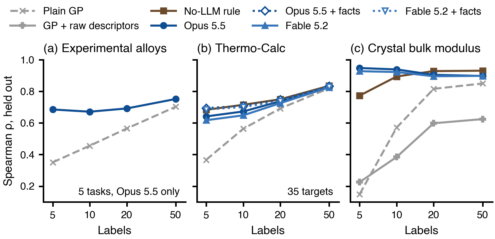
<figcaption>Ranking of held-out candidates against the number of labels, for a plain GP and for the same GP with a data-free predictor as its mean. (a) Measured alloys. (b) Thermo-Calc targets. (c) Crystal bulk modulus.</figcaption>
</figure>
<p>Every prior raises ranking at five labels from 0.37 to 0.62–0.69; at 50 labels all arms are within 0.02. In the search, networks written with no data win on 16 of 33 targets and lose on none. The extrapolation, which uses computed data, wins on 18 with a lower median regret, and Opus with the same data in the prompt matches its count (18; Fable 16). Most wins are on the 18 solidus and freezing-range targets (Opus wins 14 of them). On phase fractions the plain GP usually finds a good composition within a few steps and there is little to gain. <b>One loss:</b> Fable without facts on the γ′ fraction of nickel superalloys, 1.82 times the plain GP's regret, with the two-stage fit only; with the joint fits no arm loses on any target.</p>

<figure class="wide plot">
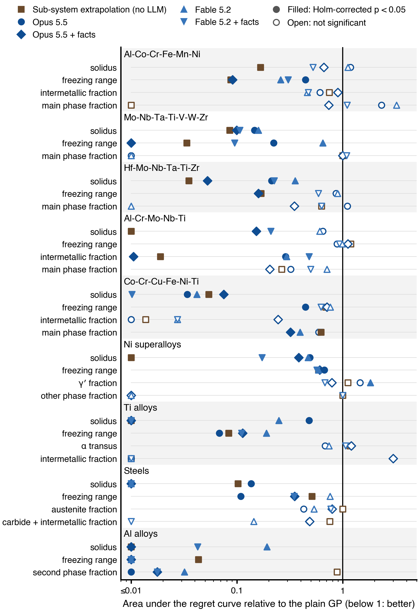
<figcaption>Bayesian optimisation on the Thermo-Calc targets: area under the regret curve relative to the plain GP (left of the line is better), 20 seeds. Filled markers: Holm-corrected p &lt; 0.05.</figcaption>
</figure>
<h2>Structure-embedding surrogates: what if the inputs have no names?</h2>

<p class="label">Experiment 5</p>
<h3>Can a network written on named descriptors help a GP that sees only an embedding?</h3>
<div class="setup"><ul>
<li><b>Surrogate:</b> the GP of a generative discovery loop. It sees a crystal as 50 coordinates of a learned embedding.</li>
<li><b>Written network:</b> 15 named descriptors of the same crystal (volume per atom, mean atomic mass, electronegativity, melting point, eleven element-group fractions) → 16 → 1. No data.</li>
<li><b>Test:</b> train on the loop's starting pool, rank the crystals the generator proposed. Bulk modulus, 6 runs.</li>
<li><b>References:</b> the rule 1 / volume per atom; the plain GP given the same 15 descriptors as extra inputs.</li>
</ul></div>
<div class="scroll wide"><table>
<tr><th>Mean of the GP</th><th>No labels</th><th>5 labels</th><th>10</th><th>20</th><th>50</th></tr>
<tr><td>None (plain GP on the embedding)</td><td></td><td>0.15</td><td>0.57</td><td>0.82</td><td>0.85</td></tr>
<tr><td>None, descriptors added to the inputs</td><td></td><td>0.30</td><td>0.37</td><td>0.52</td><td>0.49</td></tr>
<tr><td>Rule: 1 / volume per atom</td><td>0.88</td><td>0.77</td><td>0.89</td><td class="w">0.93</td><td class="w">0.93</td></tr>
<tr><td>Opus 5.5</td><td class="w">0.95</td><td class="w">0.95</td><td class="w">0.94</td><td>0.90</td><td>0.90</td></tr>
<tr><td>Fable 5.2</td><td>0.93</td><td>0.93</td><td>0.92</td><td>0.90</td><td>0.90</td></tr>
<tr><td>Haiku 5.5</td><td>0.66</td><td>0.66</td><td>0.70</td><td>0.79</td><td>0.89</td></tr>
</table></div>
<p class="note">Spearman ρ on the generated crystals. The rule row is a two-stage fit; the model rows learn slope and offset with the kernel. With that joint fit the rule stays near the plain GP at few labels (0.18 at 5), because its raw scale is far from the target's. Green: best in the column.</p>
<p>With five or ten labels the Opus and Fable networks beat the plain GP in all 18 cells (6 runs × 3 draws of the labels) and beat the volume rule. With no labels at all they rank better than the plain GP does with 500. <b>The gain is knowledge, not extra inputs:</b> adding the raw descriptors to the GP's inputs makes it worse from 10 labels on (0.52 against 0.82 at 20 labels); at 5 labels they help a little (0.30 against 0.15). From 20 labels on, the volume rule with a two-stage fit is as good or better (0.93 against 0.91 for Opus on the same fit). For heat capacity per gram the Dulong–Petit rule ranks perfectly and the networks only match it.</p>

<p class="label">Experiment 6</p>
<h3>Is the written hidden layer a useful set of features?</h3>
<p>A written network also gives 16 features, its hidden units, with no training. As GP inputs alone they need labels like any features (ρ = 0.43 at five labels). With all 500 labels a GP on them ranks at 0.94, against 0.88 for the GP on the 50-dimensional embedding. Hidden units as inputs with the output as the mean gives 0.92 to 0.94 at every label count from 5 to 500.</p>

<figure class="narrow plot">
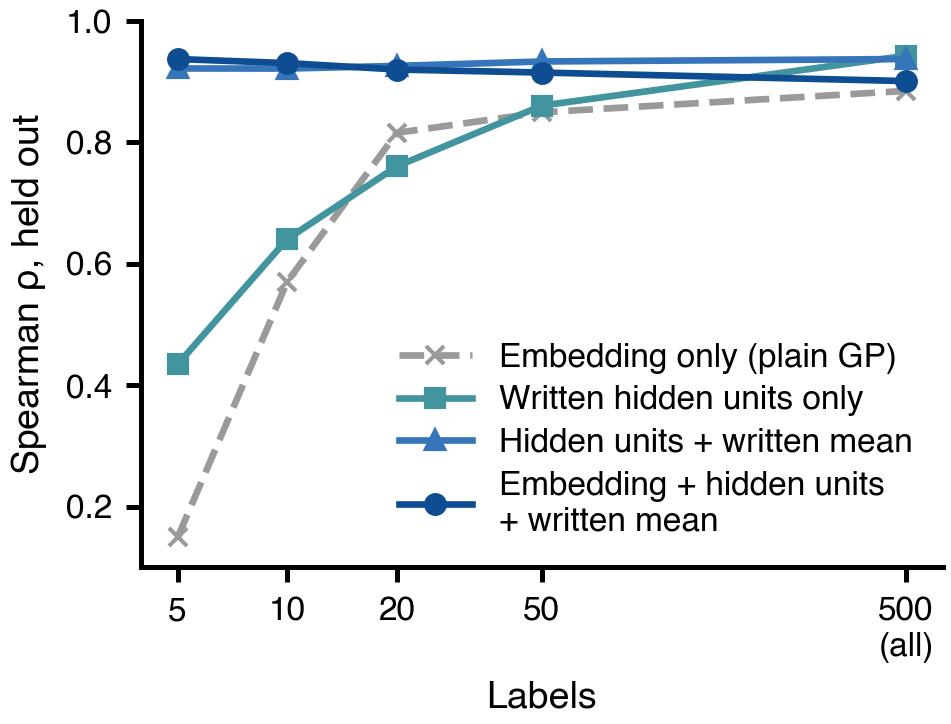
<figcaption>Crystal bulk modulus: GPs on different inputs, mean over the Opus and Fable networks and six runs.</figcaption>
</figure>
<h2>Other uses of the same network</h2>

<p class="label">Experiment 7</p>
<h3>Can a model write a filter that picks the stiff crystals out of the generator's output?</h3>
<div class="setup"><ul>
<li><b>Generators:</b> MatterGen and CrystalFlow, untouched. 128 sampled crystals from each, each scored with the eSEN-30M-OAM bulk-modulus oracle on a GPU cluster.</li>
<li><b>Filter:</b> a 15 → 16 → 1 network written by the model from named descriptors (volume per atom, mean atomic mass, electronegativity, melting point, eleven element-group fractions). No data.</li>
<li><b>Use:</b> send only the top-scored quarter to the oracle.</li>
<li><b>References:</b> the rule "smaller volume per atom is stiffer"; the same network trained on 400 Materials Project structures.</li>
</ul></div>
<div class="scroll wide"><table>
<tr><th>Scorer</th><th>ρ with the oracle</th><th>Mean of kept quarter, GPa</th><th>Oracle calls to find half the crystals above 150 GPa</th></tr>
<tr><td>No filter</td><td></td><td>71.6</td><td>60</td></tr>
<tr><td>Opus 5.5, three replies</td><td>0.92</td><td>144</td><td>6</td></tr>
<tr><td>Fable 5.2, three replies</td><td>0.88</td><td>143</td><td>7</td></tr>
<tr><td>Sonnet 5.5, three replies</td><td>0.80</td><td>143</td><td>7</td></tr>
<tr><td>Haiku 5.5, three replies</td><td>0.73</td><td>129</td><td>9</td></tr>
<tr><td>Rule: small volume per atom</td><td>0.82</td><td>133</td><td>10</td></tr>
<tr><td>Same network trained on 400 structures</td><td>0.29</td><td>51.2</td><td>60</td></tr>
<tr><td>Best possible quarter</td><td></td><td>147</td><td></td></tr>
</table></div>
<p class="note">MatterGen samples.</p>
<p>The written filter doubles the mean bulk modulus of what reaches the oracle and gets within 4 GPa of the best possible selection. It beats the network trained on real data, which does not transfer to generated crystals. <b>The margin over a one-line rule is small</b> (143 against 133 GPa in mean bulk modulus; the share of kept crystals above 150 GPa is the same, 0.36 to 0.38 against 0.38, with only 12 such crystals among the 128), and for heat capacity per gram there is none: the Dulong–Petit rule already ranks perfectly.</p>
<figure class="wide plot">
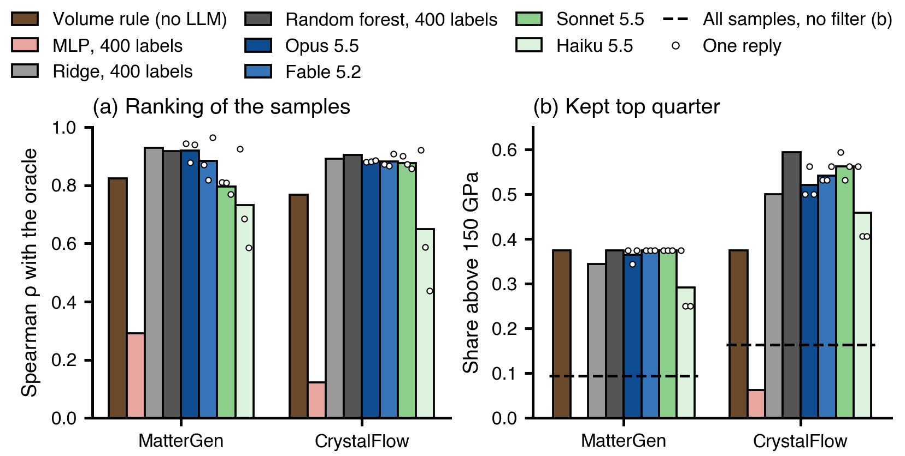
<figcaption>Scoring the samples of two crystal generators, bulk modulus, 128 samples of each base model. (a) Rank correlation with the oracle. (b) Share of crystals above 150 GPa in the kept top quarter; dashed lines mark the share among all samples.</figcaption>
</figure>
<p><b>The same holds for a second generator.</b> On CrystalFlow samples Opus, Fable and Sonnet rank at ρ = 0.88 against 0.77 for the volume rule and 0.12 for the trained network. Keeping the top quarter raises the share of crystals above 150 GPa from 0.16 to 0.52–0.56 (volume rule 0.38), and half of them are found in 17 or 18 oracle calls instead of 59 (volume rule: 28). The kept quarter averages 151 to 156 GPa against 168 for the best possible quarter, a wider gap than on MatterGen.</p>

<p class="label">Experiment 8</p>
<h3>Start, prior or mean: where does a written network belong in a Bayesian neural network?</h3>
<div class="setup"><ul>
<li><b>Surrogates:</b> a GP, MC dropout, a deep ensemble and Hamiltonian Monte Carlo.</li>
<li><b>Three uses of the written network:</b> as the prior mean, as the starting weights, as the centre of the prior over weights.</li>
<li><b>Data:</b> the five alloy tasks and 10,973 Matbench crystals, at 10 and 20 labels, five seeds.</li>
</ul></div>
<div class="scroll wide"><table>
<tr><th>Use</th><th>Ranking ρ without → with</th><th>Cells improved, of 24</th><th>95% interval coverage without → with</th></tr>
<tr><td>GP, prior mean</td><td class="w">0.53 → 0.69</td><td>23</td><td>0.71 → 0.66</td></tr>
<tr><td>MC dropout, prior mean</td><td class="w">0.54 → 0.65</td><td>22</td><td>0.45 → 0.39</td></tr>
<tr><td>Deep ensemble, start</td><td>0.50 → 0.57</td><td>19</td><td>0.60 → 0.71</td></tr>
<tr><td>MC dropout, start</td><td>0.54 → 0.54</td><td>12</td><td>0.45 → 0.88</td></tr>
<tr><td>HMC, start</td><td>0.45 → 0.40</td><td>2</td><td>0.94 → 0.93</td></tr>
<tr><td>HMC, weight prior</td><td class="l">0.45 → 0.21</td><td>0</td><td>0.94 → 0.90</td></tr>
</table></div>
<figure class="wide plot">
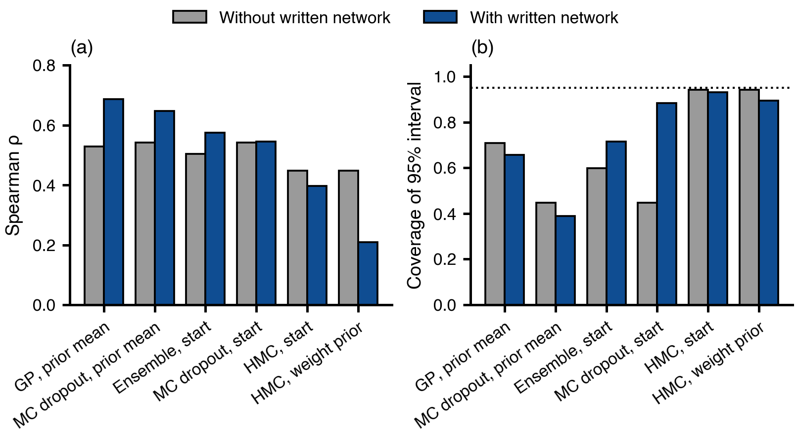
<figcaption>Six ways to put a written network into a probabilistic surrogate, at 10 and 20 labels. Left: ranking. Right: share of held-out points inside the 95% interval.</figcaption>
</figure>
<p>The written network belongs in function space. As a prior mean it helps both surrogates it was tried with. As a starting point it helps an ensemble a little and only widens MC dropout's error bars. Centring HMC's weight prior on it is the worst option: the written networks use a few large units, and a tight prior around them pins everything else at zero. <b>Caveat:</b> the prior-mean versions are overconfident at this label count.</p>
<p><b>Fix for the caveat.</b> The mean is a·m(x) + b, where m is the written network. Fitting a and b by least squares first and the GP second leaves their uncertainty out of the error bars. Putting the network inside one BoTorch model and integrating a and b out raises 95% coverage at 5 labels from 0.63 to 0.79, with ranking 0.68 against 0.64. Regret in the optimisation loop is unchanged: 0.68 of the plain GP's regret area with the joint fit against 0.69 with the two-stage fit. At 10 and 20 labels coverage stays near the plain GP's 0.68 with either fit.</p>

<p class="label">Experiment 9</p>
<h3>Are 16 hidden units too few?</h3>
<p>The original weight-space programming work wrote networks of about 20,500 weights; ours have 113 to 417. On four tasks we asked Opus 5.5 for larger networks: one hidden layer of 64 units, or two layers of 32 (577 to 1,825 weights), two replies each.</p>
<div class="scroll wide"><table>
<tr><th>Task</th><th>16 units: ρ</th><th>64 units: ρ</th><th>32 + 32 units: ρ</th><th>Units used of 64</th></tr>
<tr><td>Alloy hardness</td><td>0.79</td><td>0.76</td><td>0.78</td><td>9.5</td></tr>
<tr><td>Ti alloy yield strength</td><td>0.69</td><td>0.64</td><td>0.69</td><td>28</td></tr>
<tr><td>Ni superalloy solidus</td><td>0.84</td><td>0.85</td><td>0.82</td><td>3.0</td></tr>
<tr><td>Steel austenite fraction</td><td>0.76</td><td>0.80</td><td>0.82</td><td>5.5</td></tr>
</table></div>
<p class="note">Spearman ρ with no labels, mean over valid replies. One of the 16 larger replies was malformed.</p>
<p>Larger networks ranked no better on three tasks and slightly better on one, and the model left most of the extra units unused. Sixteen units is enough for these tasks.</p>

<h2>What we take from this</h2>
<ul>
<li><b>Ask a strong model for the weights, once per target.</b> It puts what it knows about a material class into a few hundred numbers. Opus and Fable wrote better networks than Sonnet and Haiku on three of five alloy tasks and on crystals.</li>
<li><b>Use the network as the mean of the surrogate.</b> Fit its slope and offset jointly with the GP for honest error bars: with a two-stage fit they are too narrow at five labels (coverage 0.63 to 0.74 instead of 0.79 to 0.98). BO regret is the same either way.</li>
<li><b>Give the model whatever sub-system data exists.</b> With binary and ternary values in the prompt it matched an extrapolation from the same values.</li>
<li><b>Keep a simple rule alongside.</b> For heat capacity the Dulong–Petit rule, and for the solidus of most alloy families the extrapolation from computed binary and ternary values, is as good or better.</li>
<li><b>Expect the gain early.</b> It is largest at 5 to 20 labels and gone at a few hundred.</li>
<li><b>It can fail.</b> On the yield strength of multi-principal-element alloys the networks rank the pool well (ρ = 0.69) and still make the search worse in 14 of 20 seeds (not significant after correction).</li>
</ul>

<h2>Limits</h2>
<p>One vendor's models. One network size and one prompt wording. The measured alloy sets are public and may be partly recalled; the Thermo-Calc targets were computed for this study, but the underlying assessments are built from the literature. Fixed candidate pools of 152 to 722. Crystal targets come from a machine-learned potential.</p>

<h2>Logs and code</h2>
<p>Every prompt, raw reply, model id, output-token count and score is in the repository, with the command behind each number in <code>REPRODUCE.md</code>. The repository is private until the paper is released.</p>

<h2>Supplementary: the other verbs, reading and editing</h2>
<p>We also tested reading and editing weights that were trained elsewhere, and weight arithmetic with no language model. These were less successful and are kept here for the record.</p>


<p class="label">Supplementary experiment S1</p>
<h3>Can a model find a leaked input from the weights alone?</h3>
<div class="setup"><ul>
<li><b>Network:</b> 51 → 32 → 32 → 1, trained on ORB-v3 embeddings of crystals to predict bulk modulus or heat capacity.</li>
<li><b>Planted fault:</b> one input carries the answer during training and noise afterwards. Inputs are standardised and unnamed.</li>
<li><b>Asked:</b> find the leak and silence it by editing weights. Chance is 1 in 51.</li>
<li><b>Reference:</b> the input with the largest linear path gain |w₃·W₂·W₁|, one line of algebra.</li>
</ul></div>
<div class="scroll wide"><table>
<tr><th>Method</th><th>Leak found</th><th>Bulk-modulus networks</th><th>Heat-capacity networks</th></tr>
<tr><td>Linear gain statistic</td><td>6 of 11</td><td>1 of 6</td><td>5 of 5</td></tr>
<tr><td>Fable 5.2</td><td>6 of 11</td><td>1 of 6</td><td>5 of 5</td></tr>
<tr><td>Opus 5.5</td><td>5 of 11</td><td>0 of 6</td><td>5 of 5</td></tr>
<tr><td>Sonnet 5.5</td><td>1 of 11</td><td>0 of 6</td><td>1 of 5</td></tr>
<tr><td>Haiku 5.5</td><td>1 of 11</td><td>1 of 6</td><td>0 of 5</td></tr>
</table></div>
<p>The strong models do real arithmetic on the weights: they trace first-layer units through the next two layers by hand. That is exactly the statistic: Fable scores what it scores and Opus one fewer. On the bulk-modulus networks one legitimate embedding component dominates, and the models silence it. <b>A wrong repair is worse than none:</b> Fable's edits lower mean test R² from 0.35 to 0.21 and Opus's to 0.14, and one of Fable's wrong answers was stated at 85% confidence.</p>

<p class="label">Supplementary experiment S2</p>
<h3>Can a model edit a trained surrogate to stop it underpredicting the best candidates?</h3>
<p>We showed the model a trained head and its errors by decile. It multiplied the output layer by about 1.15, which reduced the bias on the top tenth from −30.5 to −21.8 GPa without changing the ranking. Then we shuffled every weight and asked again. It made the same edit, and said it had worked "only from the decile table, not from tracing the weights". This is a recalibration recipe and has nothing to do with the weights.</p>


<p class="label">Supplementary experiment S3</p>
<h3>Can a model edit a potential's readout to fix its bulk moduli without moving energies?</h3>
<div class="setup"><ul>
<li><b>Potentials:</b> MACE-MPA-0, ORB-v3, eSEN-30M-OAM and GRACE-2L-OAM, 9 to 30 million weights each.</li>
<li><b>Editable:</b> the last layer of the energy readout, 64 to 256 numbers. The energy is linear in it, so an edit is scored exactly.</li>
<li><b>Fault:</b> bulk modulus against DFT on 400 Materials Project crystals; half shown as errors, half held out.</li>
<li><b>Constraint:</b> energies may move by at most 5 meV per atom.</li>
<li><b>The model gets:</b> the numbers, the error summary, and a table of each weight's measured effect on bulk modulus and on energy.</li>
</ul></div>
<div class="scroll wide"><table>
<tr><th>Potential</th><th>As shipped: MAE, GPa (bias)</th><th>One reply</th><th>Five measured replies</th><th>Evolution strategy, 500 evaluations</th><th>Gradient fit near the limit</th></tr>
<tr><td>ORB-v3</td><td>13.4 (−6.0)</td><td>12.9 to 13.0</td><td class="w">11.7 to 12.3</td><td>12.7 to 12.8</td><td>12.4 at 3.5 meV; 11.3 at 7.9</td></tr>
<tr><td>MACE-MPA-0</td><td>16.2 (+6.4)</td><td>15.8 to 15.9</td><td>15.75 to 15.82</td><td>15.84 to 15.93</td><td>15.4 at 5.5 meV</td></tr>
<tr><td>eSEN-30M-OAM</td><td>10.3 (+5.8)</td><td>not run</td><td>9.9 to 10.0</td><td>10.0</td><td>10.0 at 2.4 meV</td></tr>
<tr><td>GRACE-2L-OAM</td><td>8.6 (+2.3)</td><td>not run</td><td>8.54 to 8.56</td><td>8.48 to 8.51</td><td>8.45 at 4.6 meV</td></tr>
</table></div>
<p class="note">Test half, Opus 5.5 and Fable 5.2, two chains each. Six of the sixteen chosen edits sit at 5.0 to 5.2 meV per atom on the test half, just above the limit enforced on the training half. Sonnet and Haiku broke the limit by 20 to 50 times in the one-reply test.</p>
<figure class="wide plot">
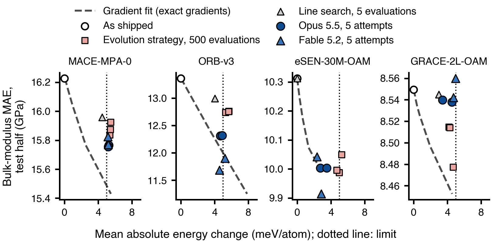
<figcaption>Edits of the last readout layer on the test half. Down is better; edits right of the dotted line break the energy limit.</figcaption>
</figure>
<p><b>One reply is arithmetic on our table.</b> We permuted the weight values and left the table correct; the edits were just as good, and Opus remarked that the values looked shuffled. In an earlier MACE prompt our table was computed at fixed volume and had the wrong sign for many weights; every reply then made the error worse.</p>
<p><b>Five measured replies are a good optimiser.</b> After each attempt we applied the edit, measured it on 200 crystals and showed the result. On ORB-v3 Fable's chains land on the curve of a gradient fit (Opus's are about 0.3 GPa above it) that has exact gradients and no budget, and ahead of an evolution strategy with 100 times the evaluations. The first attempt usually broke the energy limit; the next ones scaled back and rebalanced.</p>
<p><b>The layer sets the ceiling.</b> On eSEN and GRACE even the gradient fit moves the error by 0.1 to 0.3 GPa. And for bulk modulus there is a cheaper fix that touches no weight: refitting a slope and offset on ten DFT labels takes ORB from 13.0 to 11.4 GPa, and the plain mean of the four potentials reaches 7.9.</p>


<p class="label">Supplementary experiment S4</p>
<h3>Can the weight changes of fine-tuning runs be added, averaged and scaled?</h3>
<div class="setup"><ul>
<li><b>Runs:</b> MatterGen fine-tuned by reinforcement learning toward bulk modulus or heat capacity, five seeds each.</li>
<li><b>Task vector:</b> fine-tuned weights minus base weights. It is 0.4 to 0.6% of the base weights' norm.</li>
<li><b>Variants:</b> ten variants and the base model, 128 crystals each from the same noise seed, scored with the same oracle.</li>
</ul></div>
<figure class="wide">
<div class="chart">
<span>Base model</span><div class="track"><div class="fill ref" style="width:35.8%"></div></div><span class="v">71.6</span>
<span>Run subtracted</span><div class="track"><div class="fill ref" style="width:30.8%"></div></div><span class="v">61.6</span>
<span>One run, rank 8 only</span><div class="track"><div class="fill" style="width:45.8%"></div></div><span class="v">91.6</span>
<span>One fine-tuned run</span><div class="track"><div class="fill" style="width:47.4%"></div></div><span class="v">94.7</span>
<span>Bulk modulus + heat capacity</span><div class="track"><div class="fill" style="width:52%"></div></div><span class="v">104</span>
<span>Mean of five seeds</span><div class="track"><div class="fill" style="width:54%"></div></div><span class="v">108</span>
<span>3 × mean of five seeds</span><div class="track"><div class="fill" style="width:86%"></div></div><span class="v">172</span>
</div>
<figcaption>Mean bulk modulus of 128 sampled crystals, GPa. Bars run from 0 to 200. All differences from the base except the subtraction are significant after Holm correction (p ≤ 0.0015).</figcaption>
</figure>
<p>The five-seed average gave a higher mean than the one single run that was sampled (108 against 94.7 GPa; the difference was not tested). Scaling that average by three puts 35% of samples above 200 GPa, against 2% for the base, with no further training and no oracle calls. Rank 8 per weight matrix keeps +20 of +23 GPa, so an adapter-sized update carries what the full fine-tune learned. No language model is involved.</p>
<p class="note">One backbone, one sampling seed, no stability filter, a machine-learned oracle. The heat-capacity task vectors did not move heat capacity significantly (Holm p ≥ 0.11); the tripled bulk-modulus vector lowered it (0.263 to 0.200 J/g/K, p = 0.0007).</p>
<p><b>It did not carry over to CrystalFlow.</b> With the same ten variants, the five-seed mean moves the mean bulk modulus of the samples from 90.1 to 91.4 GPa and three times the mean to 97.5 GPa; neither change is significant.</p>

<h2>Citation</h2>
<pre id="bib">@misc{alvi2026wspmaterials,
  author = {Alvi, Sk Md Ahnaf Akif and Arr\'oyave, Raymundo},
  title  = {Weight-space programming for materials science},
  year   = {2026},
  note   = {Draft}
}</pre>
<button id="copy" type="button">Copy BibTeX</button>
</main>
<script>
document.getElementById('copy').addEventListener('click',function(){
  var t=document.getElementById('bib').textContent, b=this;
  navigator.clipboard.writeText(t).then(function(){b.textContent='Copied'},function(){
    var r=document.createRange();r.selectNodeContents(document.getElementById('bib'));
    var s=getSelection();s.removeAllRanges();s.addRange(r);b.textContent='Selected: press copy'});
});
</script>
